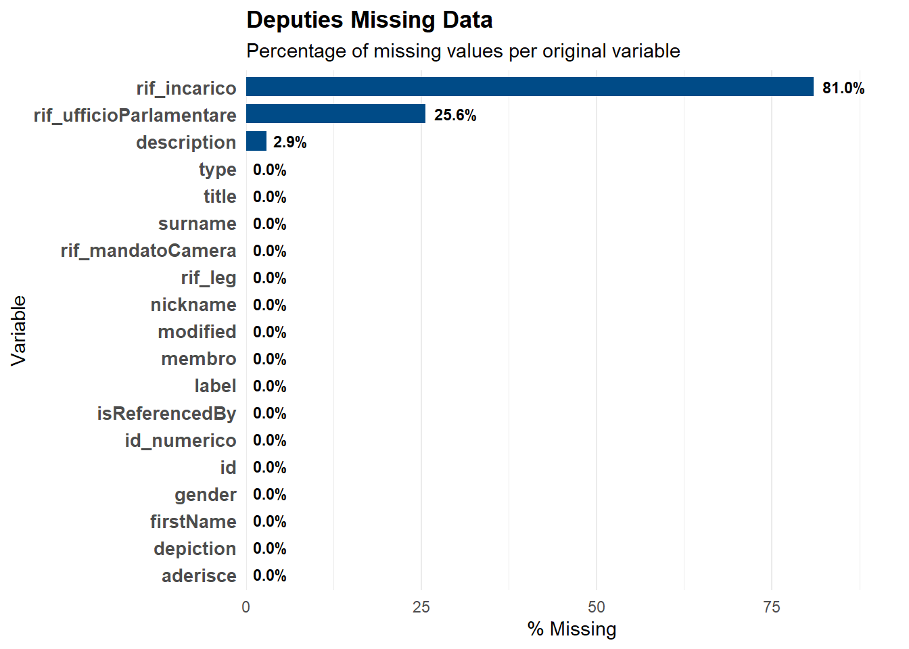

Code
# --- 1. LIBRARIES ---
library(tidyverse)
library(stringr)
library(lubridate)
library(ggplot2)
library(scales)
# --- 2. PARSING FUNCTION ---
read_camera_rdf <- function(file_path) {
raw_lines <- read_lines(file_path)
tibble(raw = raw_lines) |>
filter(raw != "") |>
extract(raw, into = c("soggetto_url", "predicato_url", "oggetto_raw"),
regex = "^<([^>]+)>\\s+<([^>]+)>\\s+(.+)$", remove = FALSE) |>
mutate(
id = str_extract(soggetto_url, "[^/]+$"),
variable = str_extract(predicato_url, "[^/#]+$"),
value = oggetto_raw |> str_remove("\\^\\^.*$") |> str_remove(" \\.$") |> str_remove_all("\"") |> str_trim()
) |>
select(id, variable, value)
}
# --- 3. LOAD RAW DATASETS ---
# A. VOTING RECORDS (Votazioni)
df_votazioni <- read_camera_rdf("data/votazione-19.rdf") |>
distinct(id, variable, .keep_all = TRUE) |>
pivot_wider(names_from = variable, values_from = value) |>
mutate(across(c(votanti, favorevoli, contrari, astenuti), as.numeric)) |>
mutate(date = ymd(date))
# B. SESSION CALENDAR (Sedute)
df_sedute <- read_camera_rdf("data/seduta-19.rdf") |>
distinct(id, variable, .keep_all = TRUE) |>
pivot_wider(names_from = variable, values_from = value) |>
mutate(date = ymd(date)) |>
select(id, date, label) |> rename(id_seduta = id)
# C. DEPUTIES REGISTRY (Deputati)
df_deputati <- read_camera_rdf("data/deputato-19.rdf") |>
distinct(id, variable, .keep_all = TRUE) |>
pivot_wider(names_from = variable, values_from = value) |>
mutate(id_numerico = str_extract(id, "\\d{5,}"))
# D. ELECTION RESULTS (Elezioni)
df_elezioni <- read_camera_rdf("data/elezione-19.rdf") |>
distinct(id, variable, .keep_all = TRUE) |>
pivot_wider(names_from = variable, values_from = value) |>
mutate(id_numerico = str_extract(id, "\\d{5,}"))
# E. PARLIAMENTARY GROUPS (Dictionary)
df_groups_dict <- read_camera_rdf("data/gruppoParlamentare-19.rdf") |>
distinct(id, variable, .keep_all = TRUE) |>
pivot_wider(names_from = variable, values_from = value) |>
select(id, label) |>
mutate(group_code = str_remove(id, "^gr")) |>
rename(group_name = label)
# --- 4. MASTER DATA PREPARATION (Hybrid Method) ---
# Step 1: Election Source (Primary)
df_source_election <- df_elezioni |>
filter(!is.na(lista)) |>
select(id_numerico, raw_party_name = lista) |>
mutate(source = "Election")
# Step 2: Office Source (Fallback)
df_source_office <- df_deputati |>
select(id_numerico, rif_ufficioParlamentare) |>
filter(!is.na(rif_ufficioParlamentare)) |>
mutate(group_code_extracted = str_extract(rif_ufficioParlamentare, "_(\\d{4})_") |> str_remove_all("_")) |>
left_join(df_groups_dict, by = c("group_code_extracted" = "group_code")) |>
filter(!is.na(group_name)) |>
distinct(id_numerico, .keep_all = TRUE) |>
select(id_numerico, raw_party_name = group_name) |>
mutate(source = "Office_Fallback")
# Step 3: Merge & Clean
df_deputati_final <- df_deputati |>
distinct(id_numerico, .keep_all = TRUE) |>
select(id, id_numerico) |>
left_join(df_source_election, by = "id_numerico") |>
rename(party_election = raw_party_name) |>
left_join(df_source_office, by = "id_numerico") |>
rename(party_office = raw_party_name) |>
mutate(final_party_raw = coalesce(party_election, party_office)) |>
mutate(
party_acronym = case_when(
is.na(final_party_raw) ~ "First-past-the-post Candidates",
str_detect(final_party_raw, regex("FRATELLI D'ITALIA", ignore_case = TRUE)) ~ "FdI",
str_detect(final_party_raw, regex("DEMOCRATICO", ignore_case = TRUE)) ~ "PD",
str_detect(final_party_raw, regex("LEGA", ignore_case = TRUE)) ~ "Lega",
str_detect(final_party_raw, regex("MOVIMENTO", ignore_case = TRUE)) ~ "M5S",
str_detect(final_party_raw, regex("FORZA ITALIA", ignore_case = TRUE)) ~ "FI",
str_detect(final_party_raw, regex("AZIONE|CALENDA|VIVA", ignore_case = TRUE)) ~ "Az-IV",
str_detect(final_party_raw, regex("VERDI|SINISTRA", ignore_case = TRUE)) ~ "AVS",
str_detect(final_party_raw, regex("MODERATI|NOI", ignore_case = TRUE)) ~ "NM",
str_detect(final_party_raw, regex("MAIE", ignore_case = TRUE)) ~ "MAIE",
str_detect(final_party_raw, regex("SVP|PATT|SÜDTIROLER|MINORANZE", ignore_case = TRUE)) ~ "SVP",
TRUE ~ "Other"
)
)
# --- 5. COLOR PALETTE ---
party_colors <- c(
"FdI" = "#003366", # Dark Blue
"PD" = "#EF3E36", # Red
"Lega" = "#008000", # Green
"M5S" = "#F4C430", # Yellow
"FI" = "#2F81C3", # Light Blue
"Az-IV" = "#C71585",# Magenta
"AVS" = "#568203", # Avocado Green
"NM" = "#333333", # Dark Grey
"SVP" = "#000000", # Black
"MAIE" = "#ADD8E6", # Sky Blue
"First-past-the-post Candidates" = "#CCCCCC"
)
# --- MISSING VALUES ANALYSIS ON DEPUTIES DATASET ---
missing_summary_all <- df_deputati |>
summarise(across(everything(), ~ mean(is.na(.)) * 100)) |>
pivot_longer(everything(), names_to = "variable", values_to = "pct_missing") |>
arrange(desc(pct_missing))
ggplot(missing_summary_all, aes(x = reorder(variable, pct_missing), y = pct_missing)) +
geom_col(fill = "#004B87", width = 0.7) +
coord_flip() +
# Labels
geom_text(aes(label = sprintf("%.1f%%", pct_missing)),
hjust = -0.2, size = 3, fontface = "bold") +
scale_y_continuous(expand = expansion(mult = c(0, 0.15))) +
theme_minimal() +
theme(
panel.grid.major.y = element_blank(),
axis.text.y = element_text(size = 10, face = "bold"),
plot.title = element_text(face = "bold")
) +
labs(
title = "Deputies Missing Data",
subtitle = "Percentage of missing values per original variable",
x = "Variable",
y = "% Missing"
)